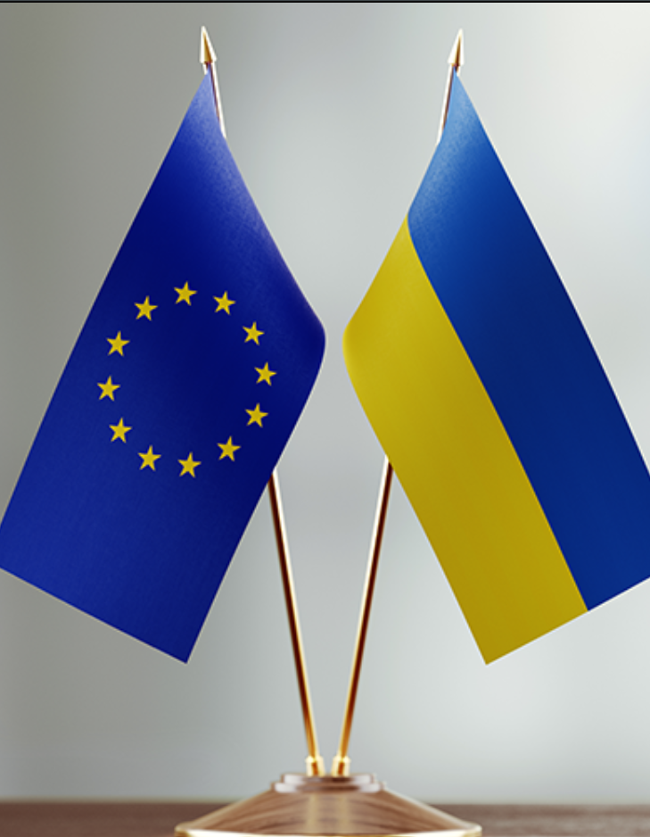

Шановні співвітчизники!
Сьогодні я з великою гордістю стою перед вами як представник України. Я пишаюся цією землею, яка дала мені життя і дає можливість відчувати свободу кожен день. Наша країна багата красою природи, розкішною культурою та талановитими людьми. Ми маємо давню історію, яка наділила нас мудрістю і силою. Ми можемо говорити на різних мовах, але в серцях у нас єдине - любов до України.
Незважаючи на випробування, які ми пройшли, ми залишаємося нашими сильними і відважними. Ми пам'ятаємо героїв, які віддали свої життя за нашу свободу і незалежність, і зобов'язані бути гідними їхньої пам'яті. Ми продовжуємо будувати нашу країну, не зупиняючись перед перешкодами, тому що ми віримо в нашу майбутню Україну. Ми віримо в мир, прогрес і процвітання. Тож нехай наша любов до України завжди буде найсильнішою силою, яка об'єднує нас у бажанні створити краще майбутнє для наших дітей та наступних поколінь. Слава Україні!
Вся інформація була взята з вікіпедії
МЫ ПРОТИВ ВОЙНЫ!
Ukraine
